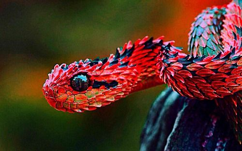
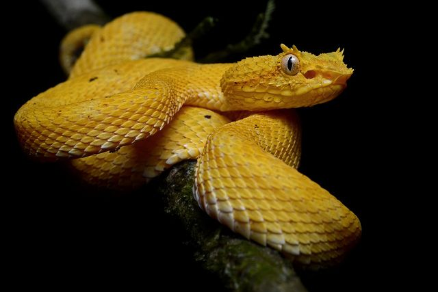

Viperidae (vipers)
 The Viperidae (vipers) are a family of venomous snakes found in most parts of the world, with the exception of Antarctica, Australia, Hawaii, Madagascar, as well as various other isolated islands, and north of the Arctic Circle. All have long (relative to non-vipers), hinged fangs that permit deep penetration and injection of snake venom. Four subfamilies are currently recognized. They are also known as viperids. The name "viper" is derived from the Latin word vipera, -ae, also meaning viper, possibly from vivus ("living") and parere ("to beget"), referring to the trait viviparity (giving live birth) common in vipers, but not in snakes at large. More Information...
Venom
Viperid venoms typically contain an abundance of protein-degrading enzymes, called proteases, that produce symptoms such as pain, strong local swelling and necrosis, blood loss from cardiovascular damage complicated by coagulopathy, and disruption of the blood-clotting system. Also being vasculotoxic in nature, viperine venom causes vascular endothelial damage and hemolysis. Death is usually caused by collapse in blood pressure. This is in contrast to elapid venoms, which generally contain neurotoxins that disable muscle contraction and cause paralysis. Death from elapid bites usually results from asphyxiation because the diaphragm can no longer contract, but this rule does not always apply; some elapid bites include proteolytic symptoms typical of viperid bites, while some viperid bites produce neurotoxic symptoms. Proteolytic venom is also dual-purpose: first, it is used for defense and to immobilize prey, as with neurotoxic venoms; second, many of the venom's enzymes have a digestive function, breaking down molecules such as lipids, nucleic acids, and proteins. This is an important adaptation, as many vipers have inefficient digestive systems.Due to the nature of proteolytic venom, a viperid bite is often a very painful experience and should always be taken seriously, though it may not necessarily prove fatal. Even with prompt and proper treatment, a bite can still result in a permanent scar, and in the worst cases, the affected limb may even have to be amputated. A victim's fate is impossible to predict, as this depends on many factors, including the species and size of the snake involved, how much venom was injected (if any), and the size and condition of the patient before being bitten. Viper bite victims may also be allergic to the venom or the antivenom. More Information...
Behavior
These snakes can decide how much venom to inject depending on the circumstances. The most important determinant of venom expenditure is generally the size of the snake; larger specimens can deliver much more venom. The species is also important, since some are likely to inject more venom than others, may have more venom available, strike more accurately, or deliver a number of bites in a short time. In predatory bites, factors that influence the amount of venom injected include the size of the prey, the species of prey, and whether the prey item is held or released. The need to label prey for chemosensory relocation after a bite and release may also play a role. In defensive bites, the amount of venom injected may be determined by the size or species of the predator (or antagonist), as well as the assessed level of threat, although larger assailants and higher threat levels may not necessarily lead to larger amounts of venom being injected. More Information...